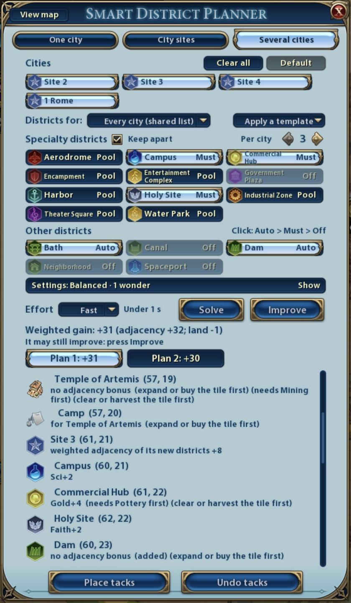

03
Wonders with districts
奇观和区域一起规划
A wonder that needs a district next to it gets one.需要相邻区域的奇观，会补上那个区域。
The Temple of Artemis comes with its Camp.阿耳忒弥斯神庙带上它要的营地。
A wonder that needs a district next to it gets one.需要相邻区域的奇观，会补上那个区域。
The Temple of Artemis comes with its Camp.阿耳忒弥斯神庙带上它要的营地。
